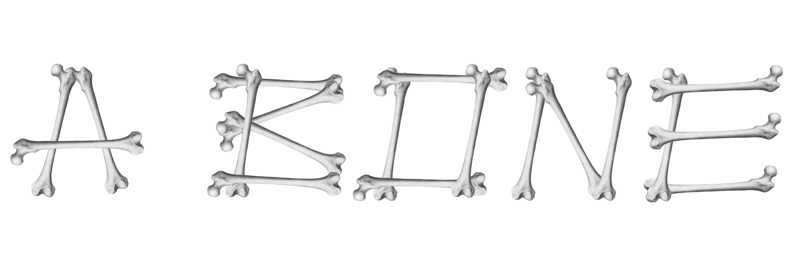
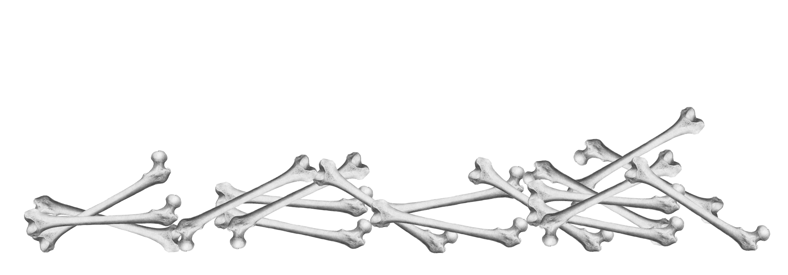
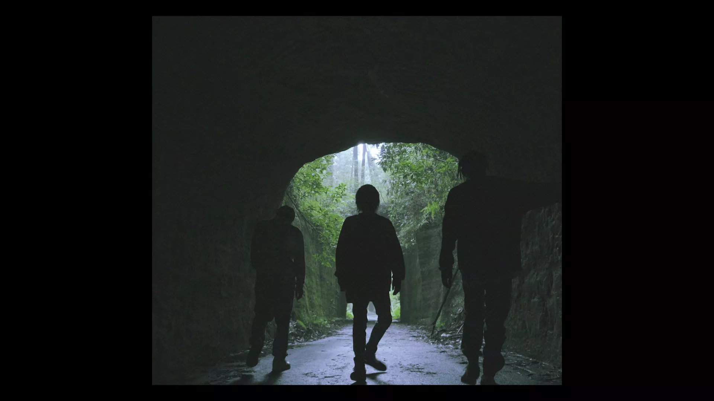

電波少女(Denpa Girl)
C Major / 130.019 BPM
"Work myself alone down to A BONE." インターネット発のヒップホップユニット・電波少女とJinmenusagi、NIHA-Cによる楽曲「A BONE」のMusic Video。 旧知の仲である三者によってつくられたリリック、世界の広がりを感じさせるトラックをうけて、バースの部分では三者の関係性やキャラクター性が垣間見えるドラマパートをインサートした。フックでは自然のロケーションを用いて、電波少女が持つインターネット性を補色的に表現。また「芸術」と「日常」の接点として美術館をとらえ、「インターネット」と「リアル」という2面性の中間点をビデオで表現した。
余談だが、当初提案した3人がゾウに乗りリップシーンを撮影するというアイデアがあった。これはHip-Hopのミュージックビデオにおける、アートディレクションの限界のもとに発想した。自己顕示や意志表明にあふれるカルチャーのなかで、ロケーションや映像美術はかなしいほどに擦り切れているように感じていた。陸上でもっとも大きい動物の上で、さながらどうぶつ奇想天外のように。そういう素直な自己顕示が見てみたい。
"Work myself alone down to A BONE." Music Video from Hip Hop Unit · Internet Girls (Denpa Girl) and Jinmenusagi, NIHA-C Music “A BONE” by Internet. After receiving a lyric made by three people who are old friends and a truck feels the spread of the world, in the part of the berth, I inserted a drama part that can catch a glimpse of the relationship and character of the three. In the hook, using the natural location, comprehensively express the Internet nature of the radio girl. In addition, we captured the museum as a point of contact between “art” and “everyday”, and represented a midpoint between “Internet” and “real” in terms of video.
As an aside, there was an idea that the three people who originally proposed took the elephant and photographed the lip scene. This was inspired by the limitations of art direction in Hip-Hop music videos. In a culture full of self-expression and will, I felt that the location and visual art were worn out to a reasonable degree. It ’s like a wild animal on the largest animal on land. I would like to see such an honest self-revelation.